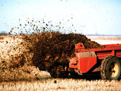
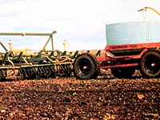
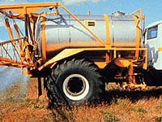
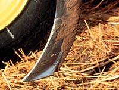
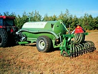

|
|
In 1699, John Woodward of England discovered that plant growth increased
with greater sediment in the water. Chemical experts began the scientific study
of plant nutrition about 1750. From the late 1880s, research accelerated on the essential
elements of fertilizers, on the best time, rate and method of application and the various
formulas.
Fertilizers are natural or artificial substances containing the chemical elements that improve growth and productivity of crops. Fertilizers enhance the natural fertility of the soil or replace the nutrients depleted by leaching losses or exported from the soil system in the harvested crop. The major fertilizer elements are:
| |||||||||||||||||||||||||||||||||||
 Natural (Organic) fertilizers The use of fertilizers is as old as agriculture. Manure and compost are the most ancient forms of fertilizer we have used to keep the crop land rich and fertile. Ground bones, wood ash, dried blood, saltpetre, guano and fish were used long before the chemical composition of soils and crops was understood. Recently, the land has been considered as a resource to help us recycle organic wastes such as sewage effluent, sludge, byproducts from the food industry etc. Animal manures are a valuable source of both macro and micro nutrients. Animals secrete most of the nutrients they digest. Dairy cow manure, for example, contains about 80 per cent of the nitrogen, 80 percent of the phosphorus and 90 percent of the potassium ingested. Relative to chemical fertilizers, however, most manures and wastes contain relatively low amounts of nutrients.
Note: values are approximate only and vary considerably with batch and storage method. Nutrients determined as % dry matter. Important nutrients such as nitrogen are in organic form and are only slowly released to the soil by microbial mineralization. In the first year of application only 10 to 40 percent of the nitrogen is expected to become available for crop uptake. Under typical Saskatchewan conditions we expect only 10 - 25% N released in year one and a further 5-15% in year 2. Repeated annual or bi- annual applications of manure are recommended to build up the soil nitrogen in situations where no chemical fertilizers are used. In addition to providing nutrients, manures have other benefits such as adding organic matter to the soil thereby improving structure and water holding capacity. Many Saskatchewan farmers have used manure to protect eroded knolls in fields with rolling topography. | |||||||||||||||||||||||||||||||||||
 Like all fertilizers, manures and wastes must be added to soil in a responsible manner as many sources can contain toxic heavy metals, high salts and pathogenic organisms. As well, manures generally have a very unpleasant odour. As populations increase along with livestock production, we have to consider the land as a way to dispose of excess wastes. For example, hog production in Saskatchewan is about to increase substantially. The land will have to be used to dispose of excess hog manure. New technology of direct injection of manure into the soil reduces odour and increases the rate of decomposition. In this way, manures can be seen as assets not problems. Green manures In many countries, a legume such as alfalfa is grown to fix atmospheric nitrogen and then plowed under before maturity. The nitrogen and other nutrients contained in the crop residue is returned to the soil over a period of about five years. The soil microflora must first mineralize the organically bound nutrients before they become available for plant uptake. The addition of organic matter along with the nutrients improves soil structure and moisture holding capacity and may reduce erosion in some soils by providing a plant cover. In areas with higher precipitation the growing crops will reduce the loss of nutrients due to leaching.
This practice is, however, rarely used in Saskatchewan because the green manure crop also removes large amounts of the reserve
water in the soil profile. In many areas there is not sufficient rainfall to replace this loss with summer fallowing.
| |||||||||||||||||||||||||||||||||||
 Chemical Fertilizers
Modern agriculture is dependent on chemical fertilizers which are manufactured on mined.
The product can be applied as solids, liquids or
gases. Many fertilizers are blended to give the crop exactly what it needs - as recommended from a soil test.
Here we see a custom operation applying a top-dress fertilizer solution to a growing forage crop.
| |||||||||||||||||||||||||||||||||||
 Most nitrogen sources are made from natural gas to produce ammonia NH3 which can be applied directly to soil as anhydrous ammonia. Special equipment is needed which can be purchased or rented from the supplier or a custom operation will apply it for a fee. A knife-like device cuts through the soil and the gas is injected behind it. The furrow in the soil is then covered and little of the gas escapes before it dissolves in the soil water. The ammonia can also be converted to urea or nitrates which can then be applied as prills (small pellets) or crystalline salts. Phosphate and potash fertilizers are mined. Although no phosphate fertilizers are mined in Saskatchewan, the province supplies most of the world's supply of potash as the salt KCl. Typical fertilizer products which are sold in bulk or bags will contain N,P,K and S in a fixed proportion. Many fertilizers are custom blended to give a balanced nutrition to the crop. Farmers are guaranteed a quality product when they buy fertilizer by the Fertilizer Act which is administered by The Food Production and Inspection Branch of Agriculture and Agrifood Canada. Dealers who sell fertilizers must guarantee the nutrient concentration. Thus a fertilIzer grade such as 16-20-0-14 must contain no less than 16 percent N, 20 % P2O5, 0 % K2O and 14 % S. All numbers are reported on a dry weight basis. Phosphorus and potassium fertilizer nutrients are reported as oxides - a remnant of early forms of chemical analyses but confusing to the average farmer. For example 20 percent P2O5 is only 8.7 percent P. | |||||||||||||||||||||||||||||||||||
 Fertilizer Application Fertilizers can be applied in many ways. It is important to apply nutrients close to the seed for nutrients that do not move very far in soil (e.g. phosphorus and some micronutrients - see ion movement). Application methods include:
Natural versus Chemical Fertilizers One important question to ask is: what is the difference in a nutrient supplied by a natural source versus a chemical fertilizer? The short answer is none. A plant sees no difference between the two sources. Roots takes up nutrients in the inorganic form usually as ions such as NO3-, H2PO4-. In order for plants to pick up nutrients from many wastes, which contain important nutrients such as N and S in organic form, they must first be mineralized by the soil microorganisms. Why do we not use more natural or organic sources of nutrients. There are six main reasons:
We know that most of the nitrogen is in organic form so we guess that about 25% of the total N will be mineralized over the growing season. We will need to apply, therefore, 200 kg of manure based N. Since each tonne contains only 10 kg N we will need to apply 200/10 or 20 tonnes/ha - a large amount. Despite these objections, natural sources will become more important as we run out of landfill areas in which to dispose such materials. It will then become economically feasible to transport and apply these wastes to more and more farmland. Already, the cities of York ton, Moose Jaw and Swift Current routinely apply sewage wastes to farmland as a viable means of disposal. |
|||||||||||||||||||||||||||||||||||